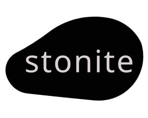

Trade Mark Journal No.2025/050 12 December 2025
UK00004301891 27 November 2025 (19,20)

- Class 19
- Building glass; monuments, not of metal; statues of stone, concrete or marble; road signs, non-luminous and non-mechanical, not of metal; transportable buildings, not of metal; building panels, not of metal; posts, not of metal; handrails, not of metal, for swimming pools; crash barriers, not of metal, for roads; spike barriers, not of metal, for roads; wall claddings, not of metal, for building; roofing felt; bitumen paper for building; bituminous coatings for roofing; asphalt; bitumen; windows, not of metal; tiles, not of metal, for building; ceramic tiles; floor tiles, not of metal; sand; gravel; cement; lime building materials; plaster; concrete; aquarium sand; paving stones.
- Class 20
- Furniture fittings, not of metal; works of art of wood, wax, Figurines of wood, wax, plaster or plastic, Prize cups of wood, wax, plaster or plastic; Non metal baskets for transporting goods for commercial purposes; fishing baskets; kennels for household pets; beds for household pets; ladders, not of metal; bamboo blinds; indoor window blinds; decorative bead curtains; curtain rings; curtain hooks; curtain rails; curtain rods; barrels, not of metal; casks not made of metal; containers, not of metal for commercial use; boxes of wood or plastic; plastic crates; non-metal pallets; recyclable plastic containers for commercial use manufactured with a barrier resin for chemical and acid resistance; wooden stoppers for industrial packaging containers; plastic stoppers for industrial packaging containers; containers for transport, not of metal; bulletin boards; picture frames; nameplates, not of metal; Kits for marking electrical cables, electrical apparatus and instruments and electrical installations, namely, plastic transparent sleeves, plastic transfer strips, plastic identification tags and marking tools; playpens for babies; cradles; baby walkers; plastic wheel chocks; wall mirrors; mattresses; pillows; air beds, not for medical purposes; furniture; clothes hangers; beehives; sections of wood for beehives; artificial honeycombs for beehives; artificial honeycomb foundations for beehives.
LEVENT SANAYİ LTD. ŞTİ
Representative: Metida Ltd